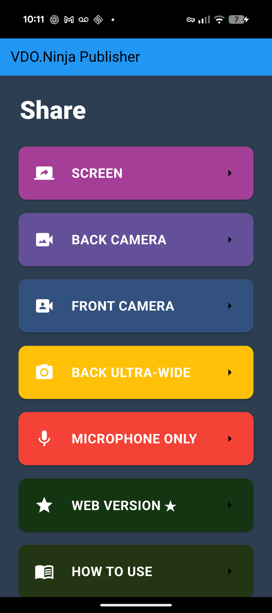

Что даёт эта настройка
Social Stream Ninja работает на компьютере, захватывает чат Twitch, YouTube, Kick или другого источника, а затем пересылает эти сообщения в нативное приложение VDO.Ninja на телефоне.
Телефон — получатель. Он не подключается напрямую к Twitch или вашей платформе чата.

1. Запустите источник Social Stream
- Откройте Social Stream Ninja на компьютере, который будет собирать чат.
- Задайте ID сеанса Social Stream Ninja.
- Откройте нужный источник платформы, например Twitch, YouTube, Kick или TikTok.
- Прежде чем проверять телефон, убедитесь, что сообщения появляются в окне источника или док-панели Social Stream.
Режим источника Twitch WebSocket подходит. Он управляет только тем, как SSN захватывает чат Twitch; он не связан с режимом Peer-to-Peer или Server на телефоне.
2. Откройте настройки публикации на телефоне
- Откройте нативное приложение VDO.Ninja.
- Выберите нужный режим камеры, экрана или микрофона.
- На экране Publishing Settings прокрутите вниз до Social Stream Ninja Integration.

3. Используйте тот же ID сеанса
Включите Social Stream и вставьте точно такой же ID сеанса, который SSN использует на компьютере.

false если вы не задали соответствующий пароль сеанса SSN.4. Выберите один режим подключения
| Режим телефона | Настройка SSN | Когда использовать |
|---|---|---|
| Peer-to-Peer | Используйте обычный P2P-вывод SSN. Не направляйте чат только через API-сервер. | Лучший вариант для начала. Работает через обычное интернет-подключение без локального сервера. |
| Сервер | Включить (Enable) Отправлять сообщения чата на API-сервер в SSN Global > Mechanics. | Используйте этот вариант, если P2P заблокирован или работает ненадёжно. |

Не смешивайте режимы. Если на телефоне выбран Peer-to-Peer, а SSN отправляет только через режим Server, телефон не получит чат. Если на телефоне выбран Server, но SSN не отправляет чат на API-сервер, телефон не получит чат.
5. Подключитесь и проверьте
- Нажмите Подключить (Connect) в нативном приложении VDO.Ninja.
- Отправьте настоящее сообщение в чат или используйте тестовое сообщение SSN.
- Посмотрите на телефон. Если на нём написано Social Stream не подключён (Social Stream not connected), источник чата может по-прежнему работать, но передача от SSN к телефону не подключена.
Частые случаи сбоев
| Симптом | Настоящая причина | Решение |
|---|---|---|
| Чат появляется в SSN, но на телефоне написано Social Stream not connected. | Источник платформы работает, но путь передачи от SSN к телефону не подключён. | Проверьте ID сеанса, режим подключения и настройку вывода SSN. |
| С одним ID сеанса на одном компьютере работает, а на другом — нет. | В режиме Peer-to-Peer SSN публикует поток, используя ID сеанса как ID потока VDO.Ninja. Одновременно публиковать с одним и тем же ID может только один экземпляр SSN. | Закройте или отключите Social Stream на первом компьютере, затем перезапустите SSN на втором; либо используйте другой ID сеанса. |
| В режиме Server чат совсем не поступает. | Телефон слушает канал API-сервера SSN, но SSN не публикует туда чат. | Включить (Enable) Отправлять сообщения чата на API-сервер в SSN Global > Mechanics. |
| В окне источника чат виден, но ничего не пересылается. | В источнике может быть включён режим только ответов или отключён захват. | Отключить (Disable) Бот только для ответов, без захвата для этого источника. |
| Удалённый телефон не может использовать режим локального сервера. | Режим локального сервера ограничен компьютером или локальной сетью и обычно недоступен через межсетевой экран. | Используйте Peer-to-Peer либо общедоступный режим Server с включённой отправкой чата SSN на API-сервер. |
Эмоции BTTV, 7TV и FFZ
Перед пересылкой чата включите в SSN параметры эмоций BTTV, 7TV или FFZ. SSN дополняет сообщение до его отправки на телефон.
Чат в нативном приложении может по-прежнему показывать запасной текст вместо эмоций-картинок, если сборка приложения не отображает встроенные изображения в чате.